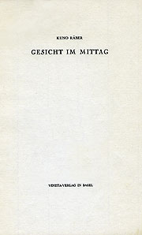
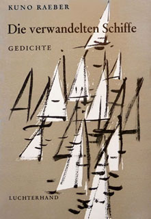
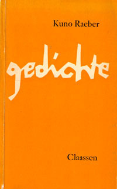
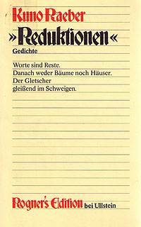

<div class="rt-container">
  <div id="rt-main" class="mb9-sa3">
    <div class="rt-container">
      <div class="rt-grid-9 ">
        <div class="rt-block">
          <div id="rt-mainbody">
            <div class="component-content">
              <span id="startOfPageId23"></span>
              <div id="k2Container" class="itemView">
                <div class="itemTagsBlock" style="float:right">
                </div>
                <div class="itemHeader">
                  <h2 class="itemTitle" style="padding-left: 30px;">
                    {{ title }}
                  </h2>
                </div>
                <div class="itemBody">
                  <div class="itemFullText">
                    <p style="text-align: right;"><a
                      [routerLink]="['/drucke/abgewandt-zugewandt/hochdeutsche-gedichte']"
                      routerLinkActive="active"></a><span class="markierung"
                                                                                 style="color: rgb(208, 5, 1);"><a
                      [routerLink]="['/anleitung']" target="_blank"><button
                      type="button" class="icon-help" title="Hilfe" style="margin-top: -50px;"> Erste Hilfe</button></a> <br><a
                      [routerLink]="['/drucke/gesicht-im-mittag']" routerLinkActive="active"></a></span>
                    </p>
                    <p style="padding-left: 200px; padding-right: 20px; margin-top: -10px;"><span
                      style="font-size: 11pt; font-weight: bold;">Das Portal enthält sämtliche Gedichte des Autors mit den Textvorstufen&nbsp;aus dem Nachlass. Durch Handschriften-Reproduktionen, diplomatische Umschriften und synoptische Darstellungen lässt sich die Textgeschichte jedes Gedichtes im Detail verfolgen.<br></span>
                    </p>
                    <p style="padding-left: 200px; padding-right: 20px;"><span style="color: #ff0000;"><strong>TESTVERSION (April 2017)</strong></span><br/>Die
                      Testversion umfasst die Texte der selbständigen Gedichtpublikationen und die Nachlasstexte des
                      Zeitraums 1979-1988 (Notizbücher, Manuskripte, Typoskripte, Drucke). Sie sind zugänglich über die
                      mit Sternchen markierten Menüpunkte.</p>
                    <p style="padding-left: 200px; padding-right: 20px;"><strong><span style="color: black;">Für die Richtigkeit der Transkriptionen wird bis zur definitiven Freigabe nicht garantiert. Insbesondere die diplomatischen Umschriften haben provisorischen Status.</span></strong>
                    </p>
                    <p style="clear: both;"><a [routerLink]="['/drucke/die-verwandelten-schiffe']"
                                               routerLinkActive="active"></a> <a
                      [routerLink]="['/drucke/gedichte']" routerLinkActive="active"></a> <a
                      [routerLink]="['/drucke/flussufer']" routerLinkActive="active"></a> <a
                      [routerLink]="['/drucke/reduktionen']" routerLinkActive="active">&nbsp;</a></p>
                    <div style="margin: 10px 10px 30px 10px; float: right; width: 60%; color: #ff0000;">
                      <p>Die zitatweise Wiedergabe von Texten ist unter Verweis auf www.kunoraeber.ch, inklusive
                        Datumsvermerk (vgl. Fußleisten), erlaubt. <br/>Die Bilder sind urheberrechtlich geschützt.</p>
                    </div>
                  </div>
                  <!-- nächste Zeilen neu wm -->
                  <div class="clr"></div>
                  <div class="clr"></div>
                </div>
                <div class="itemLinks">
                  <div class="clr"></div>
                </div>
                <div class="clr"></div>
                <div class="clr"></div>
              </div>
            </div>
          </div>
        </div>
      </div>
      <div class="rt-grid-3 ">
        <div id="rt-sidebar-a">
          <div class="rt-block ">
            <div class="module-surround">
              <div class="module-title">
                <h2 class="title">Aktuell</h2>
              </div>
              <div class="custom">
                <p><strong>Links</strong></p>
                <ul>
                  <li><a href="https://de.wikipedia.org/wiki/Kuno_Raeber" target="_blank">Wikipedia: Zu Kuno Raeber</a>
                  </li>
                  <li><a
                    href="https://www.zentralplus.ch/de/blogs/kulturblock/5498957/Das-heimliche-Projekt-zu-Kuno-Raeber.htm"
                    target="_blank" rel="nofollow" class="category">Das heimliche Projekt (zentralplus)</a></li>
                  <li><a href="https://www.worldliteraturetoday.org/2016/march/be-quiet-selected-poems-kuno-raeber"
                         target="_blank" rel="nofollow" class="category">Kuno Raeber – in Amerika</a></li>
                  <li><a href="http://www.tetramorph.de/raeber_p_ei.html" target="_blank" rel="nofollow"
                         class="category">Tetramorph</a></li>
                </ul>
                <p><br/><strong><a href="http://kunoraeber.ch/lyrik" target="_blank">Veranstaltungen</a></strong><br/>(siehe
                  Original-Website)</p>
              </div>
            </div>
          </div>
        </div>
      </div>
      <div class="clear"></div>
    </div>
  </div>
</div>

